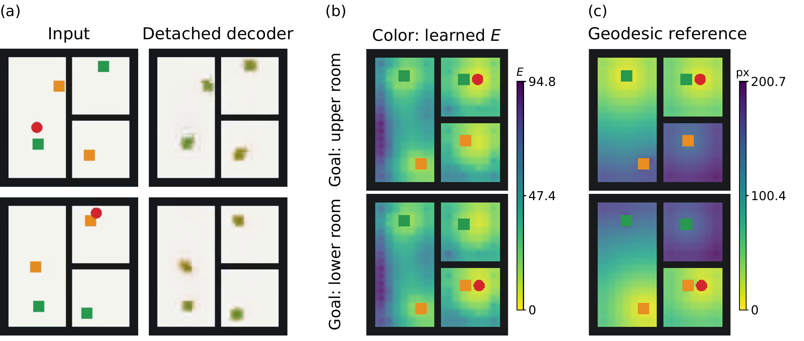
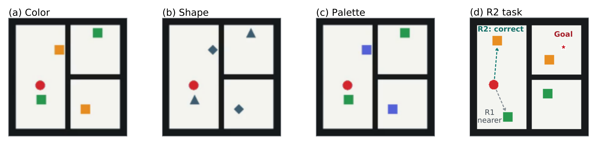

Abstract
Joint-Embedding Predictive Architectures (JEPAs) learn representations that abstract away visual details unnecessary for prediction, but which information is preserved or discarded remains poorly understood. We introduce Tunnel Room, a controlled navigation benchmark that probes this question by making a small visual cue, such as color or shape, determine where a tunnel leads. We study LeWorldModel (LeWM) and find a consistent separation between learning where tunnels are and where they lead. On Tunnel Room Color, linear probes recover tunnel locations with mean R2 = .934, but achieve only .224 when the same coordinates are identified by color. Reconstructions and goal-energy landscapes similarly preserve tunnel geometry. The effect extends to prediction and planning, where planners favor the nearest tunnel even when it is incorrect, and cue swaps that lead to different destinations produce substantially less separation in predicted than observed features. These results highlight a challenge for JEPA-based world models: information that is visually small may nevertheless be critical for predicting the consequences of actions. Why models develop this particular representational asymmetry remains an open question.
Key Results
| Endpoint | Central Room | Destination Rooms | ||
|---|---|---|---|---|
| MAE (px) ↓ | R2 ↑ | MAE (px) ↓ | R2 ↑ | |
| Top Location | 4.63 / 6.14 | .919 / .851 | 2.72 / 3.82 | .960 / .925 |
| Bottom Location | 5.14 / 6.34 | .900 / .844 | 2.82 / 4.06 | .958 / .919 |
| Green Cue | 25.05 / 25.43 | .256 / .275 | 29.81 / 29.47 | .180 / .257 |
| Orange Cue | 25.01 / 25.40 | .289 / .318 | 29.72 / 29.72 | .172 / .240 |
| Variant | Location R2 (Lin / MLP) ↑ | Cue R2 (Lin / MLP) ↑ | CEM R1 / R2 (%) ↑ | GD R1 / R2 (%) ↑ |
|---|---|---|---|---|
| Color (green / orange) | .934 / .885 | .224 / .273 | 80.0 / 16.0 | 64.0 / 52.0 |
| Shape (triangle / diamond) | .907 / .857 | .203 / .261 | 88.0 / 24.0 | 76.0 / 40.0 |
| Palette (green / blue) | .930 / .874 | .258 / .259 | 80.0 / 28.0 | 84.0 / 32.0 |
Interactive Environment Animations
Explore the Tunnel Room environment and our paper's findings interactively below. Demo 1 simulates the exact Tunnel Room geometry and cue variants; Demos 2 and 3 animate the actual frozen trajectories, latent rollout curves, and 20×20 goal-energy arrays reported in the paper.
Identifies the goal room's cue and travels to the matching tunnel even when it is farther away.
Drawn to the nearer tunnel entrance regardless of cue—succeeding on R1 (80%) but entering the wrong tunnel first in 88% of Color R2 cases.
Enters bottom hub tunnel → teleports to lower leaf.
Same action sequence → teleports to upper leaf.
Median & IQR across 16 evaluation geometries. Gray band marks the tunnel crossing.
When the goal switches rooms, bright yellow low-energy hotspots linger around both hub tunnels.
True shortest walking path cleanly shifts its yellow low-energy basin to whichever hub tunnel matches the goal room.
Paper Figures
Alongside the interactive animations above, detached pixel decoders provide direct visual confirmation that LeWM preserves room geometry and tunnel positions while washing out cue identity toward the mean hue (Figure 2a).

Figure 2: LeWM preserves tunnel geometry but weakens cue binding. (a) Two Color observations and their detached-decoder reconstructions. (b) Learned goal energy E and (c) geodesic reference energy as the goal switches between leaf rooms (red dots).

Figure 1: Tunnel Room requires cue-guided navigation. (a–c) Color, Shape, and Palette share the same geometry while changing the visual cue identifying paired tunnel endpoints; the red dot denotes the agent. (d) A rank-2 (R2) task where the tunnel leading to the goal is farther from the agent than the incorrect tunnel.
Code & Reproducibility
Our code, Tunnel Room environments, training configs, probing scripts, and frozen paper results are publicly available at https://github.com/YashDagade/jepa_features so researchers can reproduce and extend our experiments.
git clone https://github.com/YashDagade/jepa_features.git
cd jepa_features/stable-worldmodel
pip install -e '.[train,format]'
# Collect Tunnel Room trajectories
python scripts/data/collect_tunnel_rooms.py --help
# Train LeWM with spatial 8x8 aggregation and IDM
python scripts/train/lewm_idm.py --help
# Run linear/MLP coordinate probes on frozen checkpoints
python scripts/probes/location_probe.py --helpCitation
@inproceedings{dagade2026tunnelroom,
title = {Tunnel Room: Probing What JEPA World Models Preserve},
author = {Dagade, Yash and Gillin, Taj},
booktitle = {NeurIPS 2026 Workshop: From Pretrained Representations to Acting Agents},
year = {2026}
}Acknowledgments
This work was done while Yash Dagade was a Member of Technical Staff at Pantheon. We would like to thank the entire Pantheon research team for the resources and guidance that supported this project.
Our implementation builds on Stable WorldModel.